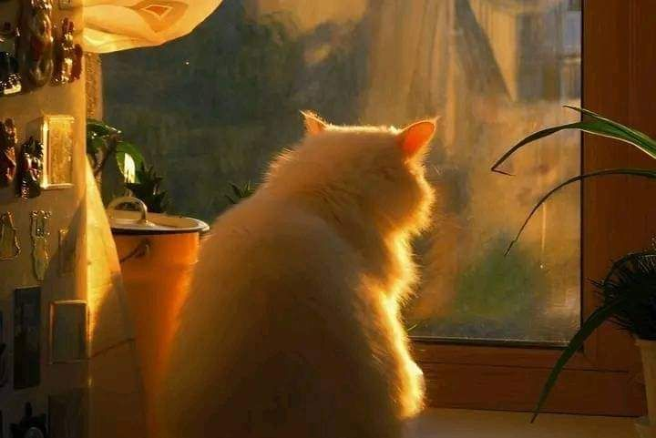

Pengamatan ini dilakukan untuk mempelajari perilaku, kebiasaan, dan karakteristik kucing dalam kehidupan sehari-hari. Kucing merupakan hewan peliharaan yang memiliki sifat unik, seperti aktif bermain, suka membersihkan diri, dan memiliki insting berburu yang kuat.
Melalui pengamatan ini, kita dapat memahami bagaimana cara kucing berinteraksi dengan lingkungan, manusia, serta hewan lainnya. Selain itu, kita juga belajar tentang cara merawat kucing dengan baik, mulai dari makanan, kebersihan, hingga kesehatan agar kucing tetap sehat dan nyaman.
Dengan mempelajari kucing, kita bisa lebih menghargai hewan peliharaan dan membangun hubungan yang lebih baik antara manusia dan hewan.